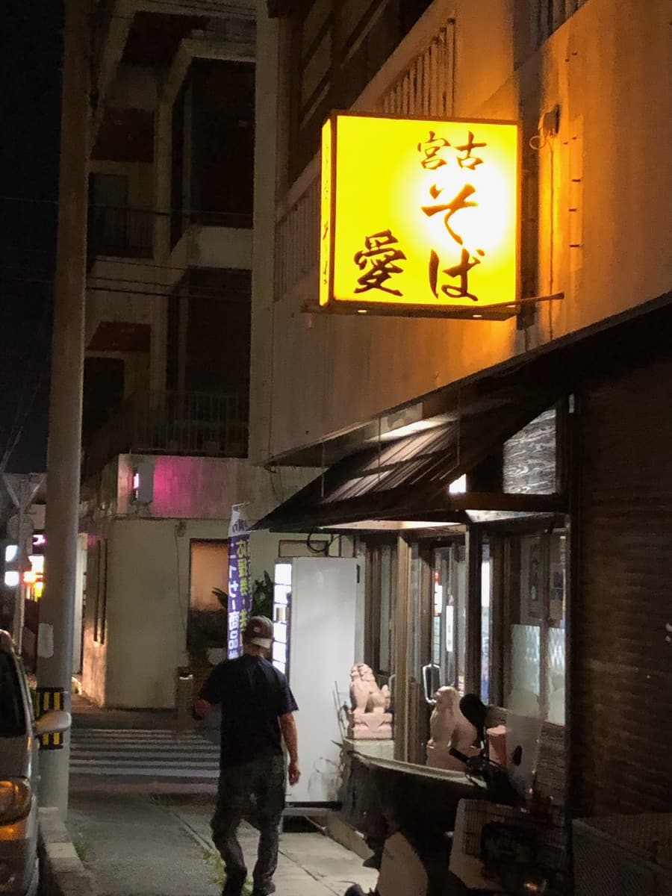
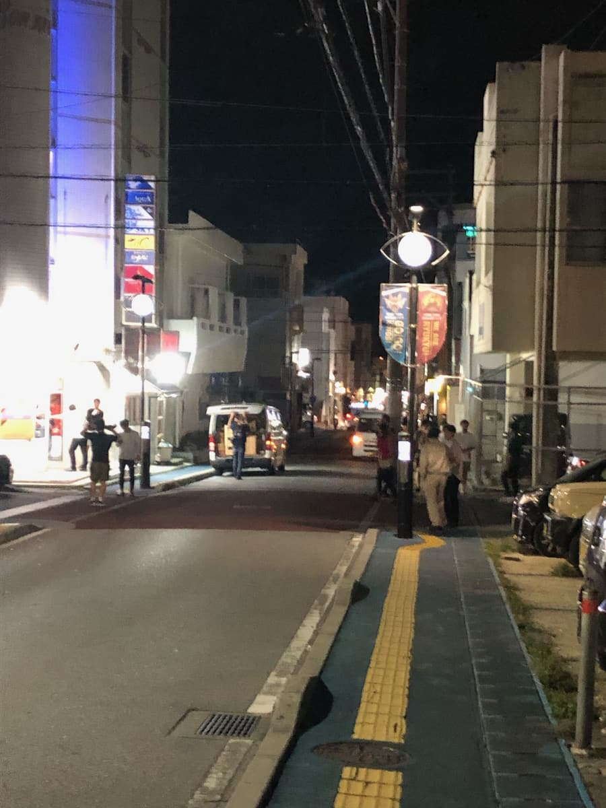
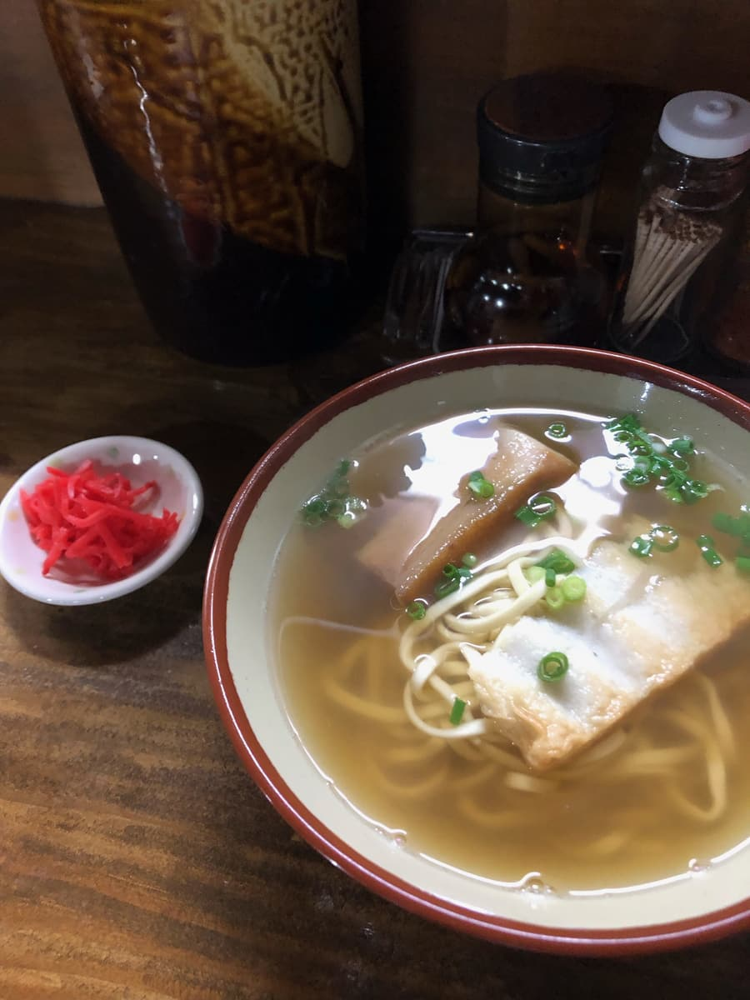
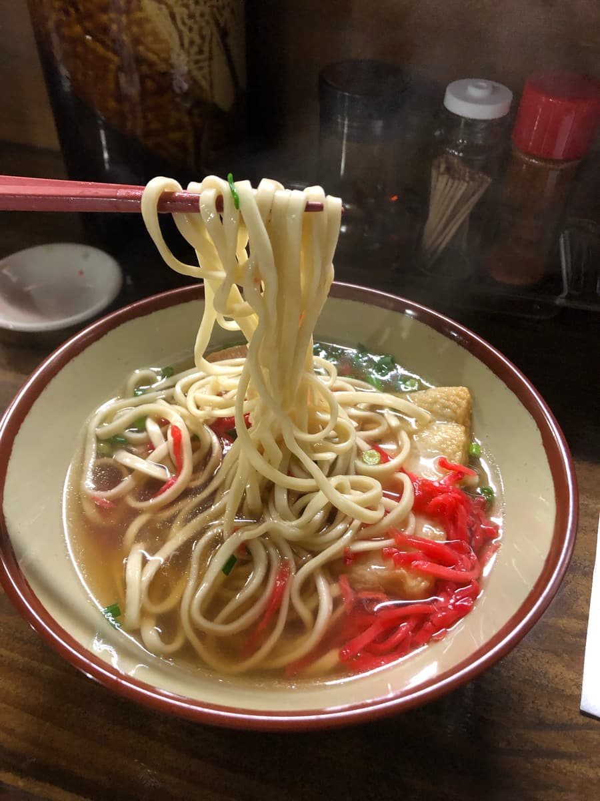

I ate here in October 2023. This shop is a participant in the "13th Okinawa Soba Stamp Rally (Oct 1, 2023 – Feb 29, 2024)," and I went as my 9th of 34 shops 😊

This shop's business hours are 18:00–5:00, so it's open at night 🤗 It's in an area of Okinawa City with lots of bars called "Nakanomachi," so it's an Okinawa soba shop for filling up before drinking or for finishing off the night after drinking (lol)


Since it was nighttime, this time I ordered a smaller Okinawa soba, the "Miyako Soba (small)." There was a meal ticket machine, but it also supports cashless payment, and I was able to pay with PayPay. It's nice to be able to pay quickly 😁
First, a sip of the soup. The bonito broth base comes through solidly, a reassuring flavor 😊 Solidly tasty.

Next, the noodles. The noodles are a thin straight type. These also have a reassuring flavor. You can't go wrong lol
Near the downtown area where this shop is (Nakanomachi (Koza)) is the road to the US military base (Kadena Air Base) (commonly known as Gate Street or Airport Road), and nearby is the street that used to bustle with American servicemen as customers.
When I walked along this road for the first time in a while, hip-hop music was blasting from bars catering to foreigners, and the street felt like a club 🤗 It makes you want to dance (lol)
Rating (9/15): The soup has solid bonito broth and a can't-go-wrong, reassuring flavor. How about it at least once to finish off a night of drinking in Koza (Nakanomachi), Okinawa City 😁 If you head out to Gate Street, you can enjoy an atmosphere like being abroad too.
Noodles: ★★★☆☆（3）
Soup: ★★★☆☆（3）
Toppings: ★★★☆☆（3）